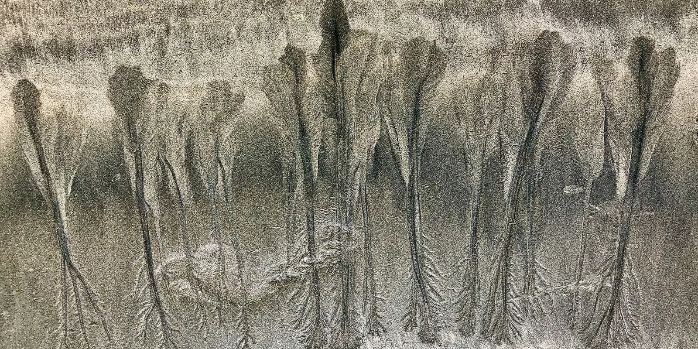

Where we work(Guanacaste)
Architects in Playa Negra

Playa Negra is in the canton of Santa Cruz, Guanacaste, at sea level. A year here brings 1,792 mm of rain, 97% of it from May to November. Permits for a lot go through the Municipalidad de Santa Cruz.
We design houses, rental villas and small hotels in Playa Negra and anywhere else in Costa Rica, from the first site visit to the CFIA permit.
(At a glance)
- Canton
- Santa Cruz, Guanacaste
- Permits
- Municipalidad de Santa Cruz
- Elevation
- Sea level
- Rain
- 1,792 mm a year
- Dry season
- December to April
- Liberia airport
- 1 h 35 min by road, 77 km
- San José airport
- 4 h 55 min by road, 243 km
- Sunlight
- 2,080 kWh/m² a year
- Solar power
- 1,672 kWh a year per kW of panels
(The year)
The dry season runs from December to April: 5 months under 60 mm of rain. The wettest month is October, with 347 mm.
July rains less than June and August: the short break known as the veranillo de San Juan.
Afternoons are hottest in April, at 35 °C on average, and coolest in November, at 31 °C. Nights stay between 23 and 25 °C.
Best time to start*
The best time to start building here is from November to March. Those 5 months bring 157 mm of rain in total; the other 7 bring 1,635 mm, 10 times as much.
Earthworks, foundations and concrete pours need dry ground, and many roads to the lots only stay passable without rain. On a day with 10 mm of rain or more, that work usually stops.
A 4-month phase of earthworks, foundations and structure that starts in November meets about 3 such days here; the same phase started in April meets about 19. Starting in November saves about 16 days of stopped work: some 2 weeks of crew and machinery paid to wait, and the pumping and drainage that wet excavations need. So the permit should be ready by October. Still, it is a recommendation, not a rule: building goes on through the rains, more slowly, and no project should sit for months waiting for the dry season.
(The wind)
Up to 7 km/h7 to 1414 to 2222 to 29Over 29
In the dry season the afternoon wind at Nicoya airport comes from the northeast.
Rooms that open to the wind on one side and away from it on the other cool themselves, and a roof that sheds the rain lets them stay open in the wet months too.
(Wind and sun)
(The sun)
Each dot is the sun at a whole hour, every three days: each figure-eight is one hour across the year, and the lines are the 21st of each month. Orange and red dots are the hours when the sun should stay off the glass.
The sun here is never far from overhead. At noon it stands 79° high in March and September and 56° in December, and from April 18 to August 27 it passes north of overhead, so walls and glass that face north take sun as well.
What heats a house is the low afternoon sun. It sets at 294°, west-northwest, in June and at 246°, west-southwest, in December. That side needs the deepest roof.
Sunrise falls between 5:20 and 6:06 all year, and sunset between 17:18 and 18:09.
The ground here gets 2,080 kWh of sunlight per m² a year, and solar panels make about 1,672 kWh a year for each kW installed.
(Building here)
A house of 300 to 500 m² to start with: change the project and the route redraws.
The Municipalidad de Santa Cruz issues the permit. It has a partial regulating plan (1983, 1994); outside it, the national construction rules apply.21,29
-
(01) The lot and its rules
-
(02) The environment
-
SETENA
SETENA
Not needed: under 500 m².8
Not needed
-
SETENA
-
(03) Drawings and the CFIA
-
-
Ministry of Health
Health: sworn declaration
For a house, or a building of 300 m² or less, Health approves on the professional's sworn declaration.12
-
Fire Department
Fire Department
No review for a house or fewer than 4 apartments, though the fire rules still apply.12
Not needed -
Municipality
Municipal review in the APC
The Municipalidad de Santa Cruz approved projects in 10.1 days on average in 2024-25, 35% at the first submission.29
-
Ministry of Health
-
(04) Licence and works
Within 200 m of the ordinary high-tide line the maritime zone law (Ley 6043) applies: the first 50 m are public and cannot be built on, and the next 150 m are held under a concession from the municipality, not owned. Check where a lot sits before you buy.
(Our work nearby)


(Questions)
When is the best time to start building in Playa Negra?
Ideally from November to March, so that the earthworks, foundations and structure fall in the dry season. A 4-month phase of that work started in November loses about 3 days to heavy rain, against about 19 if it starts in April, about 16 days of crew and machinery. It is a recommendation, not a rule: building goes on through the rains, more slowly, and no project should sit for months waiting for the dry season. To start then, have the permit ready by October.
Who issues building permits in Playa Negra?
The Municipalidad de Santa Cruz. The drawings are filed first with the CFIA, through its APC platform, and the permit comes after the land use certificate and the water availability letter.
Can I build near the beach in Playa Negra?
Not in the first 50 m from the ordinary high-tide line, which are public. The next 150 m are held under a concession from the municipality rather than owned, with their own rules. Beyond 200 m, a titled lot follows the normal permit process.
How hot does it get in Playa Negra?
Afternoons average 35 °C in April, the hottest month, and 31 °C in November. Nights stay between 23 and 25 °C. Shade on the west side and air moving through the rooms do more for comfort than anything else.
How far is Playa Negra from the airports?
By road, without traffic, 1 h 35 min from Daniel Oduber airport in Liberia (77 km) and 4 h 55 min from Juan Santamaría airport in San José (243 km).
Rain: CHIRPS climatology (CHPclim v2, Climate Hazards Center, UC Santa Barbara). Temperature and wind: measured at Nicoya airport, 42 km away, typical year 2011 to 2025 (Climate.OneBuilding.org TMYx, from NOAA observations), temperatures adjusted for elevation. Heavy-rain days: NASA POWER (MERRA-2), 2001 to 2020. Sun: calculated for the town's coordinates. Elevation: SRTM. Roads and places: OpenStreetMap. Gathered October 2026.